Portfolio - Patrick Stefaniak
PDF version
DREYDL: ZOL ZAYN MIT MAZEL
Slot Machine
2023
In collaboration with Forest Reid. DREYDL: ZOL ZAYN MIT MAZEL is a Gematria slot machine; it speaks to the mystic, the gambler, and the Torah scholar. Beginning with a slot machine adaptation of dreydl, the interactive installation brings the player into the world of paylines and card counting combined with the Jewish mystical practice of alpha-numeric text interpretation.
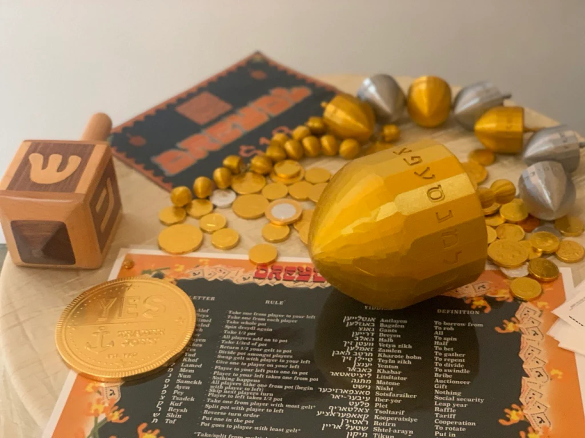
We also produced a series of 3D printed, 22 sided dreydls, which have one side for each letter of the Hebrew alphabet. This came from a consideration of suprise bonus rounds that happen in slot machines and prompted a new set of rules to be created to extend the traditional top game.

double grid (and... and... and...)
Acrylic paint on acrylic yarn - 5'x4.5'
2023
A crochet painting where I painted a checkered grid that had been deformed by a 3D cloth simulation on top of the same crocheted grid.
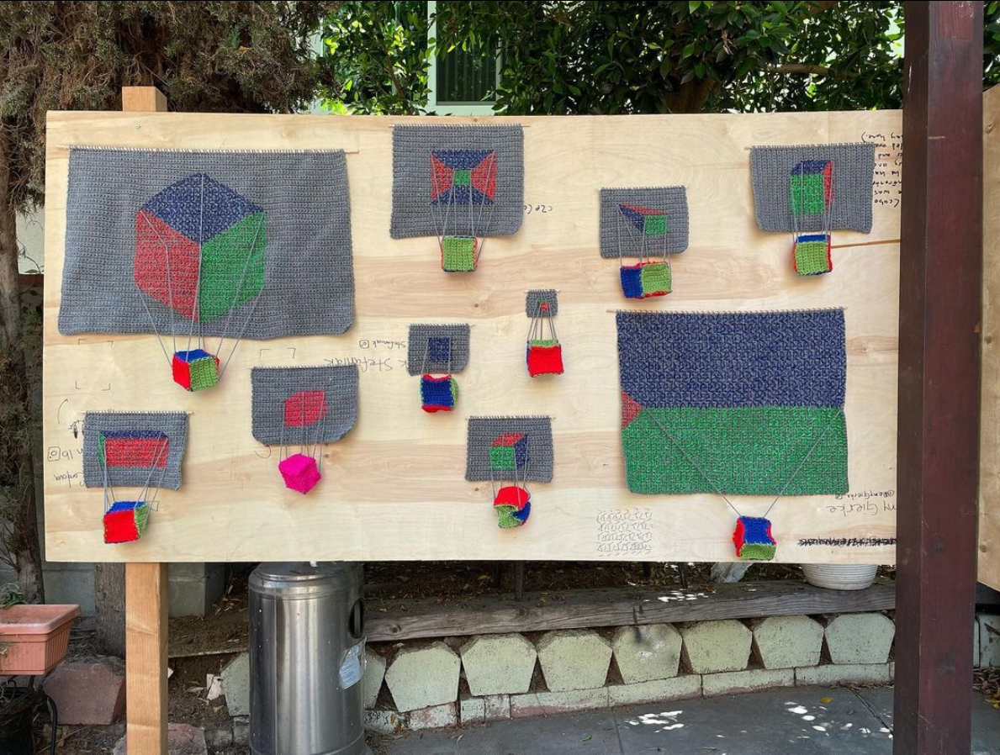
c2p (cube to plane)
Acrylic paint on acrylic yarn
2022
A series of crochet paintings where a 3D cube is being projected onto a 2D surface.
Shtrinkl
Videogame
2022
link to project
In collaboration with Forest Reid. Players can either use a touchscreen or a mouse to play with strings who's configurations reference musical instruments, modern art, computer graphics, and Jewish mysticism. Interspersed in the levels is the Yiddish poem 'Longing' by Rachel Korn.
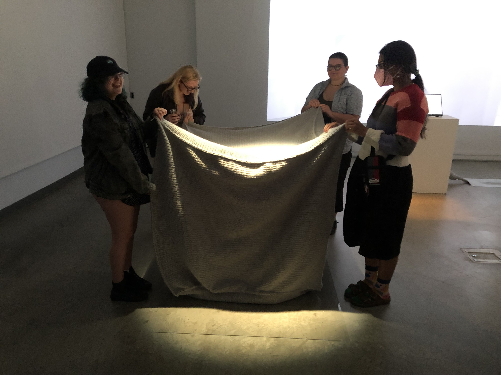
Unity Primitive: Cube
Hand Crocheted Acrylic Yarn - 1x1x1 meter
2019-2020
In the Unity 3D game engine the default cube is grey and 1x1x1 unit. In VR and AR applications, the Unity unit translates to a meter in IRL space. For today's game engines rendering a cube is trivial, it can happen in a fraction of a second. Crocheting the same cube with yarn took me a year and a half. The inside is empty. Just like the digital 3D model it is a closed surface of faces. It takes 2 people to hold it up and see the 3 dimensional cube shape, and even then it sags.
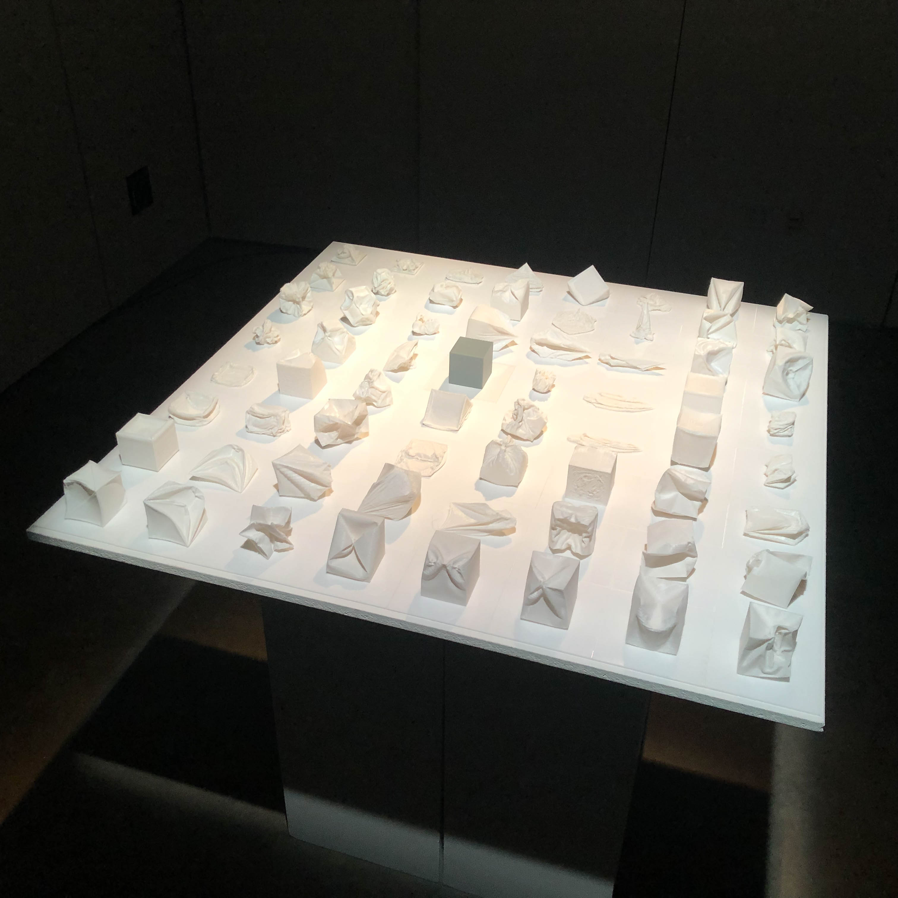
A few ways of being a cube
PLA and Acrylic - 4ft x 4ft x 4in
2021
A grid of 64 3D prints of cubes that have been deformed through cloth simulation.
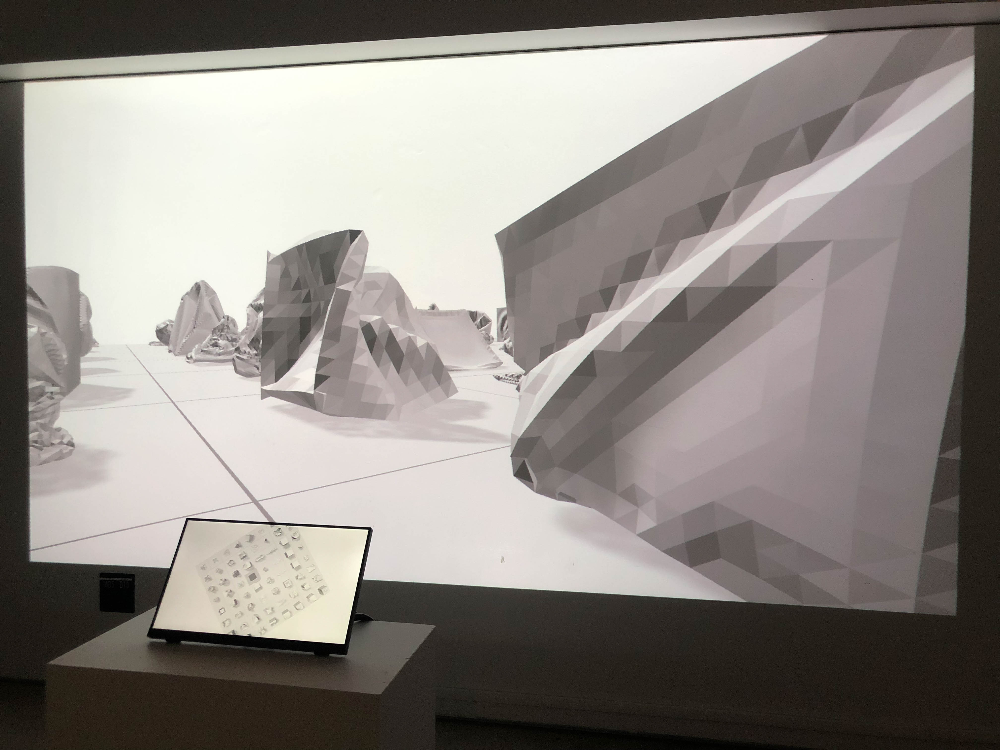
CUBEISM 2: Baroque Edition
Videogame for Touch Screen and Projection or Desktop
2021
link to project
A game with levels where players can play with digital versions of both the 'Unity Primitive: Cube', which is being cloth simulated, and 'A few ways of being a cube'.
A few ways of being a few ways of being a cube
Video - 13:58
2021
A video animation of the grid of 'A few ways of being a cube' being deformed through cloth simulation.
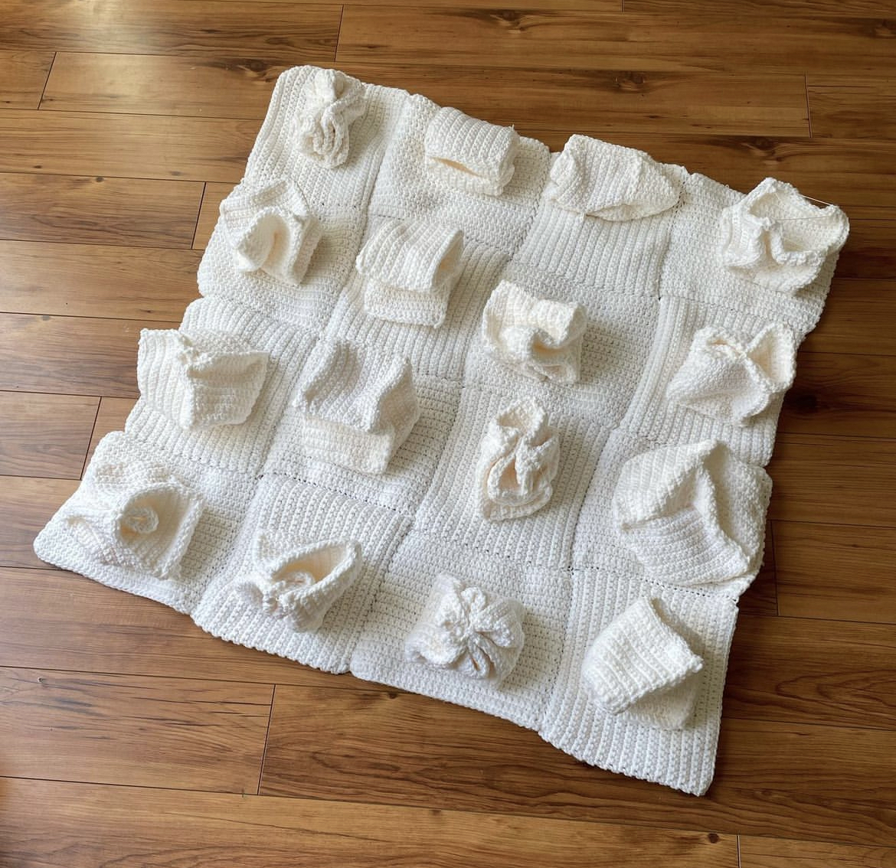
A few, soft ways of being a cube
Acrylic yarn - 3'x3'x5"
2022
A crocheted iteration of 'A few ways of being a cube'.
P.S.
Particle System Essay
2022
link to project
P.S. is centered on a pun of the initials of my name, particle system, and an array of other things P.S. could stand for. I accumulated texts written both by myself and sampled around other authors swirling around ideas like Roland Barthes by Roland Barthes's fragmented exploration of autobiography and Bruce Nauman's photo of becoming Marcel Duchamp's Fountain, figuring as an endless spout of creativity. These texts are displayed in fragmented spurts on the bottom of the screen while a series of particle systems and synthesized soundscapes play.
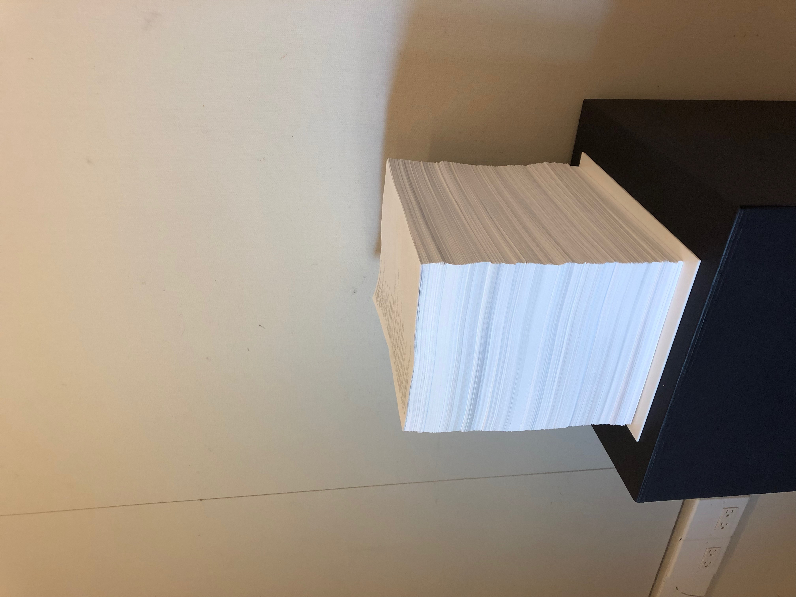
Unity Source Code in C#
Acid-free copy paper - 8.5x11x11 inches
2020
A print-out of all the C# source code that makes up the open source Unity game engine.
Site Holes
VR installation and Zine
2019
link to project
link to zine
In the installation there is a VR headset whose view is projected onto a screen that has been completely hole punched. From the other side of the screen this creates a hybrid image of the person wearing the headset and what they are seeing. Inside the VR headset is a series of scenes following research and formal investigation on holes, spiraling off of an interest in cornhole and The Farmer's Almanac. I also created a Field Guide for the installation, which documents many of the holes I found in my research.
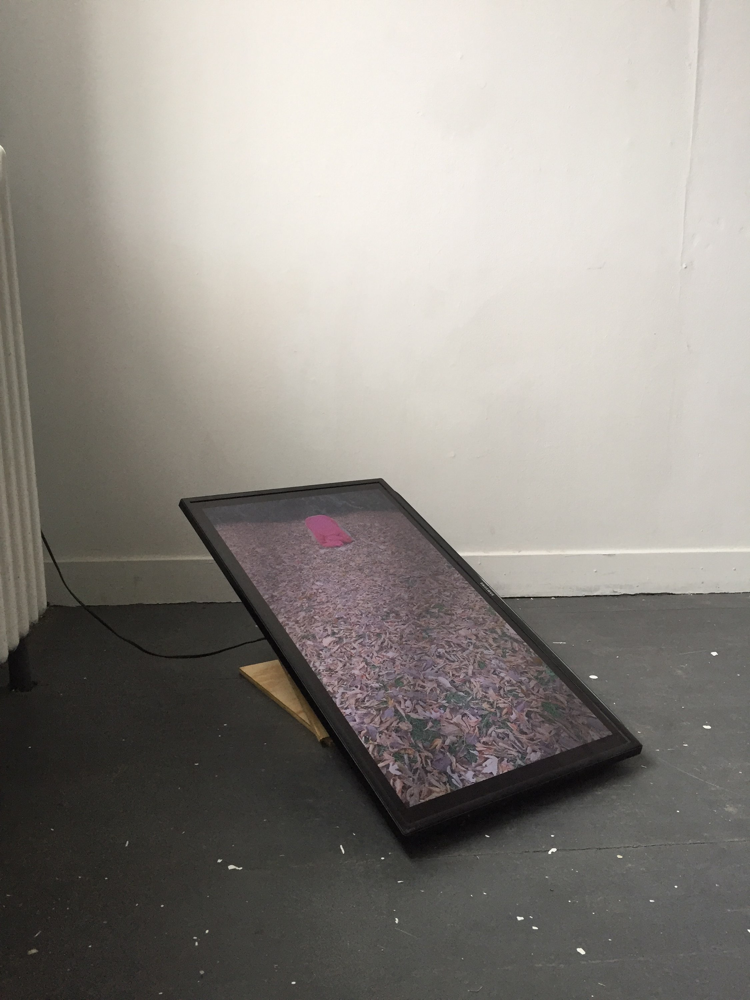
Butt of the Joke
HD Video - 7:38
2018
Cornhole is a popular game for backyards and tailgates in the Midwest. Players take turns tossing beanbags and attempting to land them on a flat, inclined wooden board or, ideally, in the hole cut into the top half of the board. In this video I took the place of the board, literalizing the homophobic and sexual implications of the name 'cornhole'.
Narcissistic Archery
Virtual Reality Archery
2018
link to project
A series of scenes where the player is able to use a bow and arrow to shoot at a target. As the scenes progress, the player's vantage point shifts in relation to the controllers and the target. Eventually, they share the target's perspective and are able to shoot at themselves from a distance.
Die
3D Environment for Virtual Reality
2018
link to project
Tony Smith said of his Die sculpture, "I didn’t make a drawing; I just picked up the phone and ordered it.” A 6'x6'x6' virtual black cube sits on the ground in the middle of the virtual reality play area, which can range from 6'6" x 5' to 11'5" x 11'5". While standing inside the cube only solid black is visible. When looking at the cube from outside its boundaries, the environment's background is taken from the camera which is on the headset, so that it seems to be sitting in the physical space that the user is standing in. It is hard to get a good vantage point of the cube from such a constricted space and it doesn't seem to match correctly with the camera feed background. Made in Unity and displayed on an HTC Vive headset.
Ball Orientation Practice Field
Virtual Reality Golf
2018
link to project
The Virtual Reality headset is attached to a golf ball. When the player hits the ball it remains motionless and the world spins around it. If the player gets their head down on the ground near the ball they can hear it whisper a related passage from Brian Massumi's Parables of the Virtual. Made in Unity.
rec.
Videogame and PDF
2017
link to project
link to rec.mix PDF
What's the difference between playing a record and playing a videogame? rec. is a single-button game which considers the form and physicality of vinyl record players. Traces of objects' movement are built up and wiped away as the objects spin, crash, pulsate, and are shot across the screen. It consists of a series of scenes which are punctuated by short pauses during which a sphere spins on the screen with a quiet noise, mimicking the empty space between vinyl tracks. Game made in Unity and controller made with acrylic and arcade button.
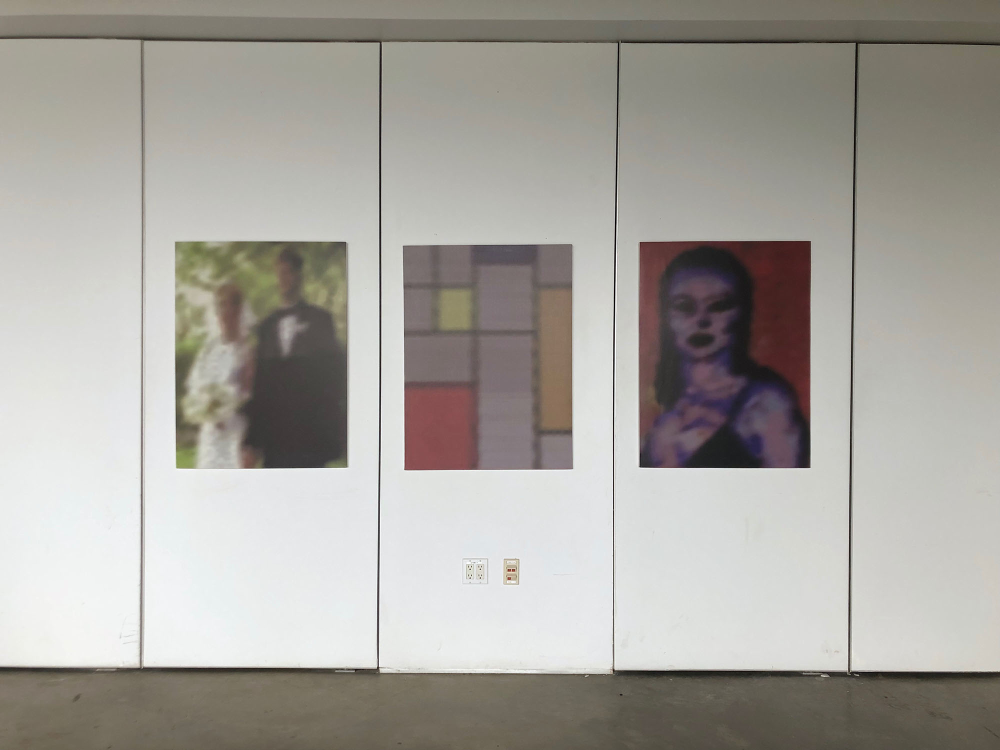
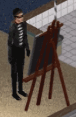
being an artist
Website and paintings
2016/2020
link to project
The Sims was a game that served the same purpose as a dollhouse, a place to try and enact fantasies that we didn't fully understand. I wanted to find out what the game says about the fantasy of being someone who lives entirely off of money made from selling their art. To do this I recorded myself playing The Sims and tried to paint as much as possible and then, looking back at the footage, compiled data about the money earned and time spent in this pursuit. I then took screen grabs of the 3 paintings you can make in the game and had them printed on to-scale canvases.
inter-pedestal
Videogame Installation
2015
link to project
This installation consists of 4 pedestal-controllers, each embedded with a joystick and arcade button, 4 pedestal-seats, and a T.V. pedestal all coated in the same paint as the gallery walls. The game consists of a series of scenes where, generally, there are 4 pedestals which correspond to the 4 pedestal-controllers. The scenes change between omniscient views, multiplayer 'split-screens', first-person views from the pedestals' POV, and layered camera views. The pedestals can collide, jump, expand, spin, fly, multiply, and destroy each other.
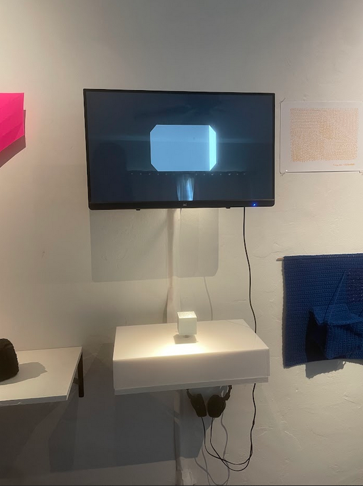
CUBEISM
Videogame
2015
link to project
This game is a series of short scenes which contain exactly one cube, monotonous sounds, and any number of cameras. These camera views are layered on top of each other as a literal instantiation of Cubism. By rotating the cube, the player's understanding of this simple form falls apart and opens up in surprising ways. Made in Unity, controller made of acrylic, PLA, and joystick.
"CUBEISM takes the “least expressive” object in Sol LeWitt’s mind and reconfigures it as something intensely emotional, surprising and joyful. It takes on all the trappings of minimalism, in painting, sculpture, and in videogames (simplified controls, limited use of ludic devices, abstract geometric aesthetic, and so on), and makes them genuinely fun, funny and thoughtful. One can play CUBEISM and understand it as a cute exercise exploring Unity camera tools, math and minimalist game design, but one can also understand it as a piece of conceptual art which works as an intertextual, hypertextual satire of the very media to which it pays homage. The limits of our imaginations when it comes to these intersecting media are exposed, simply but boldly, and the intimation is made to us that we can, once again, burst those limits open."
Lana Polansky - "Notes on CUBEISM: Shapes of Grey" - Sufficiently Human - May 27, 2016
ergonomics
HD Video- 34:56
2014
The physical actions of labor while working on a computer are so minimal that we tend to consider it an entirely mental pursuit. By creating a giant computer mouse shell out of steel, with a compartment to insert a real, working computer mouse, I turned the simple act of moving a mouse into a full-body workout. In the video, I use this giant mouse shell to play a game I created in Processing where I have to mouse over red pop-up notifications in a short, predetermined amount of time.
crrrrrn
3D Environment
2014
link to project
If you were to get lost inside a corn field, you would have almost no sense of direction. The stalks are planted as compactly as possible in regular rows, a process that chokes out biodiversity that wasn't also· killed by pesticides. This environment consists of a large cluster of stalk forms with scattered corn towers which emit tones. Outside the cluster is an empty red horizon with low undulating rumbles. Made in Unity and can be played on a screen or with a VR headset.
Abstract Games
Essay
2023
link to essay
A short essay exploring how abstraction in videogame design can allow for creative movement in directions outside of the expectations tied to realism in computer graphics.
Artist Statement:
I use crochet as an analogy for understanding 3D computer graphics. Both follow a process of creating shapes by starting out with loose points or threads, drawing them into lines or yarn, weaving those lines together into 2D faces, which then close up into 3D forms. It's hard to follow the process of how computer generated images are rendered- it happens within a fraction of a second and involves a complex series of math functions that are all hidden from view. The resulting picture is meant to hide all of this work and appear as if by magic. Crochet shows its work. Every stitch is visible, and even if you don't know how to crochet you can picture someone using their hands in creating it. We immediately relate textiles to the body and how they could be used or worn. Videogames and movies tend to remove us from awareness of our bodies, preferring audiences that are seated and still. But our experiences with them involve our whole body, not just our eyes and ears. In working between crochet and computer graphics, as well as other media like 3D printing, painting, installation, and performance, I aim for a greater sense of agency and playfulness with these technologies and ideas that can often feel intimidating. This also involves my interest in modern art, especially minimal sculpture and abstract painting, that, in failing to act in the way we expect art to operate, can leave people feeling cold and duped. But this art can teach us lessons about how we perceive objects which is useful in understanding how 3D graphics work and offers a modality that isn't based on high-definition realism. In combining modern art, videogames, and craft I want to make them all feel accessible to be touched, groped, grasped, and manipulated. I want to express the bodily intimacy of these practices in a way that's fun, mathy, sexy, and serious.